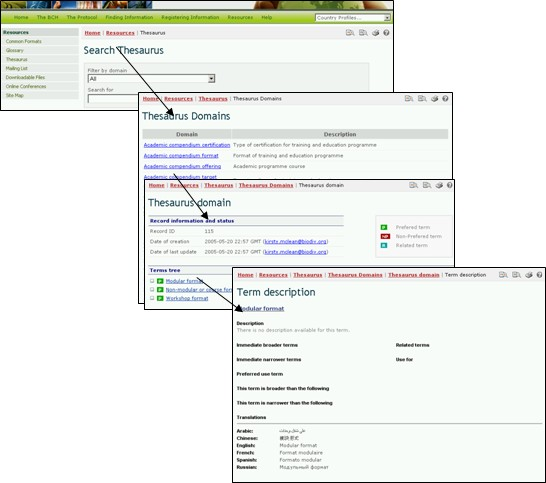

The Thesaurus provides a list of pre-defined terms and related synonyms, or ‘controlled vocabularies’, used in a specific context. These terms are used to register and search for information in the BCH databases.
By following the link in the Resources page, the user accesses the The BCH Thesaurus page, which provides on its top a search interface and below it a list of term domains in alphabetical order.


The The BCH Thesaurus interface provides a drop down menu for selection of domains within the Thesaurus and a box for use of keywords or terms in the search. The user enters the domain and/or keyword(s) of interest and selects the Search button.
In the results list, a term is selected from the Term ID column for more information about its use in the BCH Central Portal. This takes the user to the Term description record, which provides detail on the meaning of the term and how it is used in the BCH Central Portal, including broader, narrower and preferred uses of the term and translations into the six official UN languages.
Example: If a user wishes to understand the use of the term “transboundary” in activities related to the Protocol, the user enters the search terms “All” in the Filter by domain box and “transboundary” in the Search for box on the The BCH Thesaurus page. Selecting the Search button will provide a list of records describing how the term “transboundary” is used in various domains within the BCH Central Portal. The search results (in January 2008) identified five uses of the term in four domains within the BCH.

The list of term domains provides access to an alphabetical list of terms used in each domain. A key is provided to indicate which terms are ‘preferred’, non-preferred’ or ‘related’.

Selecting a term from the Terms tree list on the The BCH Thesaurus takes the user to the Term Description record. This record provides detail on the meaning of the term and how it is used in the BCH, including broader, narrower and preferred uses of the term and translations into the six official UN languages. Within a term description, the preferred use term in the controlled vocabulary is a term selected from among synonyms to be used for indexing and retrieval purposes. For example, maize is the preferred use term over corn in the BCH.